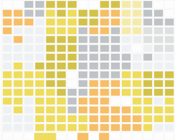
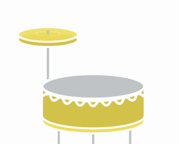
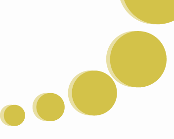

A d3 interactive visualization simulating the behavior of marine life. Tools used: d3.js, flocking algorithmVisit
Consumer Complaints
A d3 interactive visualization of credit card consumer complaints for the top four US banks from 2008-2011.Tools used: d3, html, css, mysqlVisit
Space is noisy
An HTML5 audio app featuring sounds collected from NASA expeditions. Tools used: html5 audio tag, illustratorVisit
Tastefully
A culinary site with interactive visualizations and detailed information for the usual suspects on my herb rack.Tools used: d3, js/jquery, html/css, php, wordpress, illustrator, photoshopVisit
Decision Engine
A web app providing analytics about online consumer chatter surrounding pharmaceutical products. Tools used: python, mysql, django, html/css/js/jqueryVisit
Wedding
A wedding invitation site with a game built using Impactjs and rsvp functionality. Tools used: html/css/js/jquery, mysql, php, illustrator, photoshopVisit

NYPD Stop and Frisk
A d3 interactive visualization of NYPD Stop and Frisk Data from 2003-2011.Tools used: d3, leaflet.js, html, css, mysqlVisit

Jazz Drum Machine
A site redesign for Ben Lacker's Jazz Drum Machine. Tools used: html/css, js/jquery, illustratorVisit

FDIC History
A d3 visualization of the FDIC deposit and asset information for the top 25 US banks from 2003-2011. Tools used: d3, html/css,js, illustratorVisit